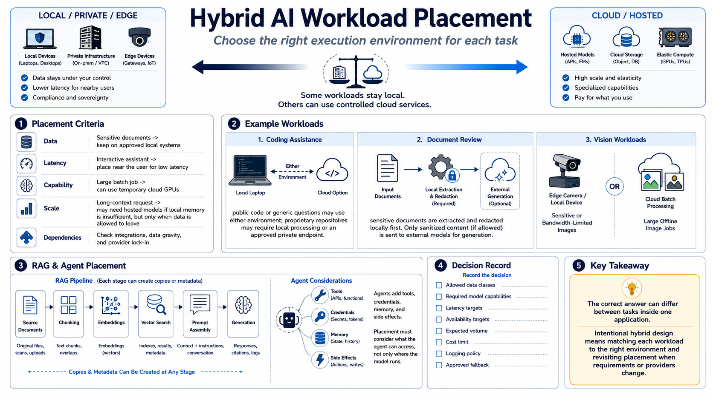

Workload Placement Decisions
Connecting to LMS... Progress: in progress

Narration
Place a workload by evaluating its data, latency, capability, scale, and dependencies. Sensitive documents may need to remain on approved local systems. An interactive assistant may require low latency near the user. A large batch job may tolerate network delay and benefit from temporary cloud GPUs. A long-context request may need a hosted model if local memory cannot support it, but only when the input is permitted to leave.
Coding assistance illustrates the trade. Public code or generic questions may use either environment, while proprietary repositories may require local processing or an approved private endpoint. Document review can separate local extraction and redaction from external generation. Vision workloads may stay at the edge when images are sensitive or bandwidth is limited, while large offline image batches move to controlled cloud capacity.
Retrieval-augmented generation has several placement points: source documents, chunking, embeddings, vector search, prompt assembly, and generation. Each can create copies or metadata. Agent workflows add tools, credentials, memory, and side effects, so placement must consider what the agent can access, not only where the language model runs.
Use a decision record for each workload. State allowed data classes, required model capabilities, latency and availability targets, expected volume, cost limit, logging policy, and approved fallback. Revisit placement when requirements or providers change. The correct answer can differ between tasks inside one application; that is the purpose of intentional hybrid design.